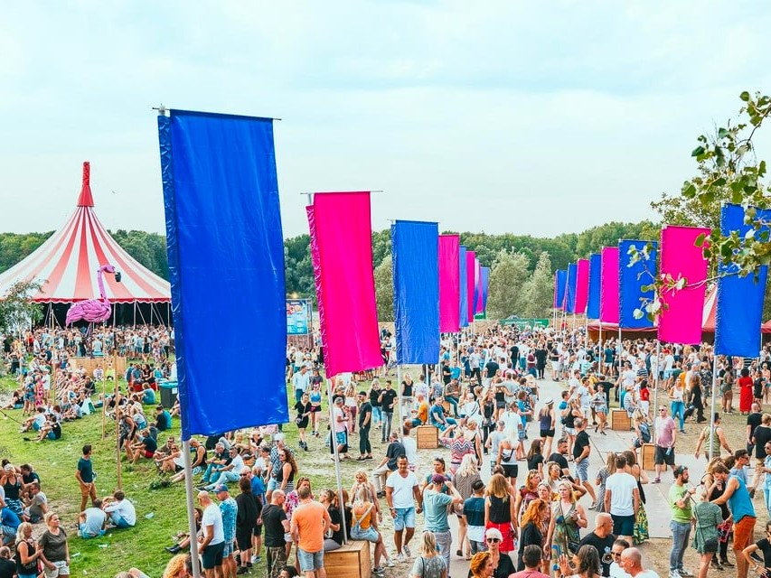
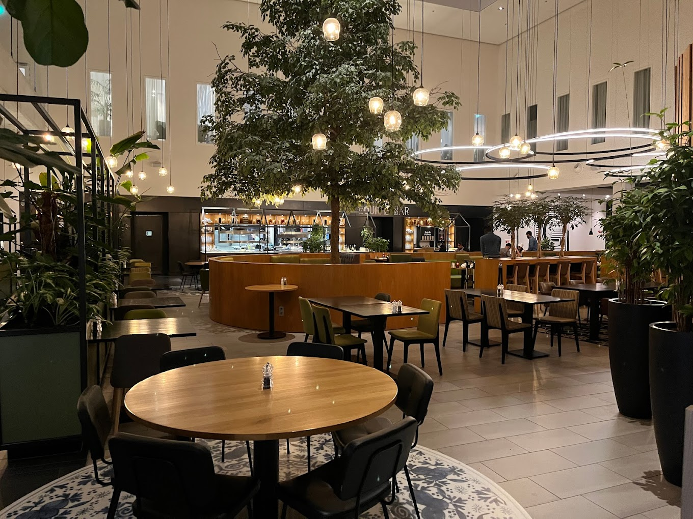
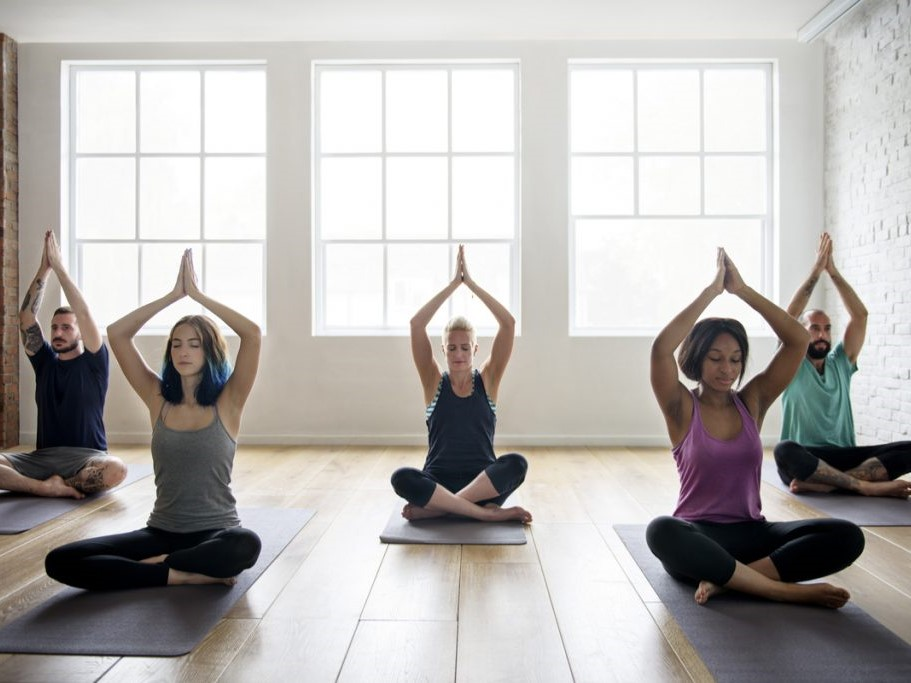

A modern city
Living in Hoofddorp has many advantages for students because it is a very modern city. Here are some facts about what the city has to offer.
A few things that make Hoofddorp great
- Many festivals and events
- Cool places for hanging out
- Awesome parks and places for doing sports
- Wellness centers with quality services
Regardless of your lifestyle, you will find something to suit your preferences!
Many festivals and events
Events and festivals always take place! Some of the most fun and well known are the following:
- Meerlive - the most awesome music event in Hoofddorp with Dutch artists. Visit this page for more details.
- Mysteryland - the greatest dance festival in the country
- Wooferland -a festival of house and dance music with DJs from all over the world
- Awakenings - a techno festival well known worldwide. It is organized in May.
- The Hoppy Beer festival - a festival where you can try more than 100 varities of beer. Visit the website of the Hoppy Beer Festival!
Hoofddorp offers events and festivals worth experiencing!
Cool places for hanging out
Most of the nicest places for hanging out are the pubs, caffes and the cinema. You can choose from many styles of venues and activities suitable for many special occasions:
- Spending a fun pool and dart evening, not alone of course, at Pool and Dart Cafe Potters.
- Going to a live concert at Music Club.
- Having a quiet dinner at Gourmet Bar restaurant Hoofddorp.
- Spending a crazy party night at the bar RIO Hoofddorp.
Or if you’re a fan of beer, you can’t miss out the pubs Plein14 and Duyckercafe. At these pubs you can never make a wrong choice!
Awesome parks and places for doing sports

Hoofddorp offers a wide variety of recreational activities! If you like photography or never miss doing sports, here are some spots that you can visit:
- Stadspark Hoofddorp - it is the perfect place to be if you like photography. Due to its wonderful landscapes, you can take amzing album photos!
- Haarlemmeerse Bos - offers the possibility of hiking and swimming in the swimming area on South Beach
- Toolenburg plas Hoofddorp - in this park you can jog, swim, play basket, ski and go fishing.
If you seek experiences more close to nature or want to make new friends, you will enjoy these parks!
Wellness centers with quality services
Wellness centers can be important. Especially if you become too busy during your study programme. At the wellness centers in Hoofddorp you can enjoy realxing and healthy activities such as yoga and fitness. There is a great offer from companies where top rated therapists and trainers work!
Faraja Yoga and Pilates in Hoofddorp is the largest yoga cenetr in the city. Here you can take active classes of yoga and pilates, pilates corses for body strenghtening and do relaxation exercises.
A great advantage of these classes is that they have a varied schedule that makes the classes accessible for everyone. Besides this fact, if you’re still a yoga beginner, you can access their live lessons.
For doing fitness, besides yoga and pilates, Jeroen Mass Sports company is a good choice.
More information about wellness centers
| Company | Services | Monthly subscription | Rating |
|---|---|---|---|
| Faraja Yoga & Pilates | yoga, pilates | 25 € | 4,7 |
| Pak je Adem ademcoaching | yoga | 45 € | 5 |
| Sharonna Yoga | yoga | 135 € | 5 |
| Jeroen Mass Sports Company | fitness, pilates | 60 € | 4,5 |
| LijfStijl Centrum Hoofddorp | fitness, swimming | 60 € | 4,5 |